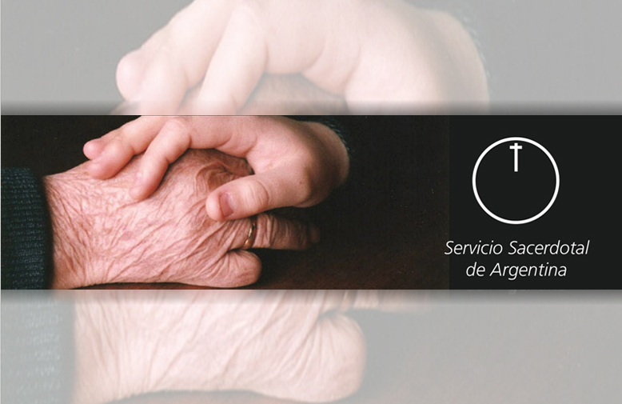
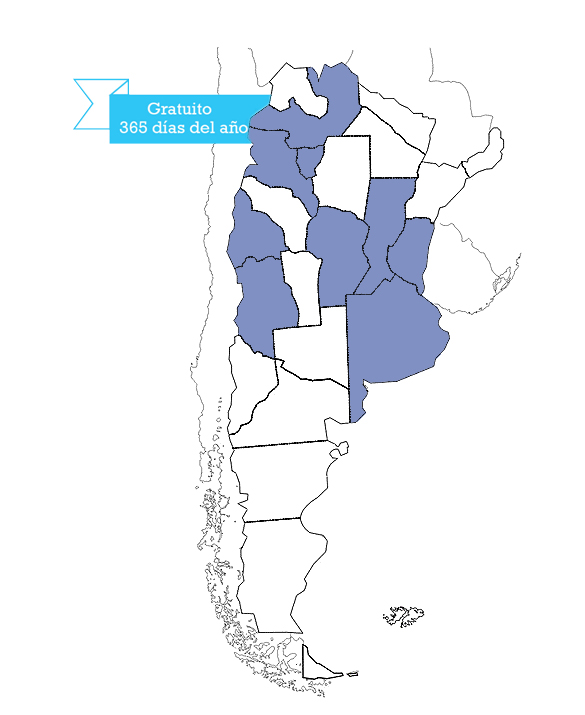
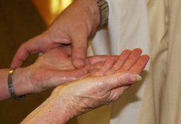

|  |
Actualmente en nuestro país el
Servicio Sacerdotal de Urgencia tiene sede en diecisiete
ciudades, y estas sedes forman la Federación de los
Servicios Sacerdotales de Urgencia de la
Argentina, supervisada por la Comisión Episcopal Nacional.
Cada Sede tiene una Comisión Directiva que lo dirige y
dependen del Obispo de la Diócesis Regional. Por orden de
antigüedad, estos son: 1-Córdoba 2-Buenos Aires 3-Mendoza 4-Tucumán 5-Rosario 6-Mar del Plata 7-Salta 8-Santa Fe 9-Avellaneda 10-Lomas de Zamora 11-San Rafael 12-La Plata 13-Paraná 14-San Juan 15-Quilmes 16-Catamarca 17-Concordia Haga click en el mapa en la provincia de su interés para ver los teléfonos de contacto del Servicio Sacerdotal más cercano. |
El Servicio Sacerdotal de Urgencia es un servicio de la
Iglesia Católica para sus fieles en situación de necesidad
urgente de un Sacramento. Funciona especialmente en las
grandes ciudades de nuestro pais. Cada noche un Sacerdote
acompañado de algunos laicos varones montan guardia y acuden
a los llamados ya sea en domicilios particulares como
hospitales o clínicas.
Este apostolado surgió gracias a la iniciativa de un abogado de
la ciudad de Córdoba (Argentina), el doctor Armando César
Sánchez, quien teniendo a su padre enfermo y a altas horas
de la noche, quiso conseguir un Sacerdote que le
administrara los últimos Sacramentos, pero sin éxito. Esto
lo llevó a meditar en la necesidad de que la Iglesia contara
con una especie de guardia nocturna de la misma manera que
otros servicios de la sociedad lo tienen, como salud,
bomberos, policía, etc.
Gracias a la buena recepción
de la idea por parte del entonces Arzobispo de Córdoba,
Mons. Fermín Laffite, se fundó el Servicio Sacerdotal de
Urgencia. La noche del 26 de octubre de 1952, festividad de
Jesucristo, Rey del Universo, se puso en
marcha por primera vez en la Argentina una guardia con un
sacerdote y dos laicos, esperando en piadosa vigilia el
llamado de algún hermano necesitado de la gracia de Dios.
El servicio atiende en forma totalmente gratuita, en
horario nocturno, todos los días del año con la misión es
acudir ante una llamada de urgencia por un enfermo, para
auxiliarlo en el espíritu, administrándole los Sacramentos,
en especial la Santa Unción, en el horario de la noche. Su
presencia, nocturna, gratuita y callada, es admirada por
toda la Iglesia. La acción Sacramental que efectúa,
en la que interviene principalmente Cristo a través de su Sacerdote tiene a los laicos como cooperadores de la
Salvación, constituyéndose en un verdadero Ministerio
Laical. Este Ministerio se traduce en un testimonio
personal de Fe que exige Santidad de vida. También es una
manifestación de Caridad, pues lo mueve el deseo de
ponerse a disposición de sus hermanos sufrientes.
La respuesta masiva y alegre de los que tenemos la
vocación de colaborar con el Servicio Sacerdotal ha sido y
es un signo de la actualidad de esta obra apostólica, única
en el mundo, y que llamó al Santo Padre Juan Pablo II, al conocerla, a
estimular y alentar su accionar. También es importante decir
que nuestro querido Papa Francisco integró el staff del
Servicio Sacerdotal cuando estaba en la Arquidiocesis de
Buenos Aires.
 |
 |
 |
 |
 |
|
SACRAMENTOS Los Sacramentos que se pueden administrar a través de nuestro servicio son principalmente el Santísimo Viático y la Unción de los enfermos. Cuando es necesario, el Sacramento de la Reconciliación y eventualmente el Bautismo de emergencia, también conocido como Agua del Socorro. |
UNCIÓN Dice la Lumen Gentiun (CV II): "Con la sagrada unción de los enfermos y la oración de los presbíteros, toda la Iglesia encomienda a los enfermos al Señor sufriente y glorificado para que los alivie y los salve (cf. St 5, 14-16). Incluso los anima a unirse libremente a la pasión y muerte de Cristo y a contribuir, así, al bien del pueblo de Dios". Puede administrarse a cualquier católico de más de 7 años y repetido cada vez que la enfermedad se agrave o surja una crisis. |
CONFESIÓN "Los que se acercan al sacramento de la penitencia obtienen de la misericordia de Dios el perdón de los pecados cometidos contra El y, al mismo tiempo, se reconcilian con la Iglesia, a la que ofendieron con sus pecados. Ella les mueve a conversión con su amor, su ejemplo y sus oraciones" (LG 11). Si la persona para la que se pide la Unción está consciente, es recomendable la realización de la confesión y si es posible la recepción del Viático. |
VIÁTICO En la Eucaristía recibida como Viático nos encontramos en plena e íntima unión con Cristo que muere en nuestra muerte en la luminosidad de la resurrección. Esta luminosidad significa la compañía de la Verdad personal de toda la existencia que, vivida en Cristo, lleva consigo el juicio misericordioso y benigno de nuestro Salvador; significa el amor misericordioso del Padre eterno y el Amor todopoderoso del Espíritu Santo. En el Viático la fe nos sostiene por la presencia definitiva de Cristo. |
BAUTISMO Ante peligro de muerte de un bebé, el Bautismo puede administrarlo cualquier persona, con tal que emplee la materia y la forma prescritas y tenga intención de hacer lo que la Iglesia hace. La razón es clara: siendo el bautismo necesario para la salvación, quiso Jesucristo facilitar su administración. Por eso el S. Sacerdotal acude con este Sacramento cuando se lo solicita. Si el niño logra su curación, se debe notificar al párroco para que lo registre y complete las ceremonias de la celebración ordinaria del Sacramento. |
“La familia estaba ahí reunida, llorando porque la persona estaba muy grave. Al mes, una mujer me busca en la parroquia y me pregunta si me acordaba de ella. Le contesto que no, entonces, ella me dice: ‘yo soy la mujer que estaba grave, a la que le dio la unción’" (Leer más...)
|
|
|
|
|
|
Si no ocurren milagros en Nochebuena, ¿cuándo? Que lo cuente, sino, el padre Edmundo Ortiz, asesor espiritual del Servicio Sacerdotal de Urgencia de Tucumán. Recuerda una Navidad en el Hospital Padilla, en la que el sacerdote había ido a darle la unción de los enfermos a un desahuciado que estaba internado. “La familia estaba ahí reunida, llorando porque la persona estaba muy grave. Al mes, una mujer me busca en la parroquia y me pregunta si me acordaba de ella. Le contesto que no, entonces, ella me dice: ‘yo soy la mujer que estaba grave, a la que le dio la unción’. Ella me contó que en su agonía solo se acordaba que alguien le había leído la Palabra de Dios. Un mes después, le dieron el alta”, cuenta el sacerdote. Como ese milagro, en todos estos años, los voluntarios han sumado anécdotas de todo tipo. |
|
|
|
||
“Tenemos experiencia de cómo algunos enfermos son realmente evangelizadores. Lo hemos visto y nos hemos quedado impactados por la vida y el testimonio que están ofreciendo en la enfermedad." (Leer más...)
|
|
|
|
|
|
Lo hemos visto y nos hemos quedado impactados por la vida y el testimonio que están ofreciendo en la enfermedad, extendiendo, como un bálsamo, luz, paz y serenidad a quienes le rodean, hablando con un amor infinito del Señor, para sorpresa de quienes le visitan y que, tal vez, esperarían palabras más amargas, de queja o reproche al Señor. El enfermo evangeliza. El enfermo (santo) evangeliza dando testimonio de la fuerza del Señor en su debilidad, hablando palabras de fe, aceptando con paz el sufrimiento, orando y ofreciéndose. "En un tiempo en el que se oculta la cruz, vosotros, aceptándola sois testimonios de que Jesucristo quiso abrazarla para nuestra salvación" (S. Juan Pablo II). El sufrimiento, y en general, la enfermedad, es también un camino de santidad posible, cuando se acepta unido a Cristo; por eso se puede evangelizar. "...El sufrimiento capacita para la santidad, dado que encierra grandes posibilidades apostólicas y tiene un valor salvífico excepcional cuando va unido a los sufrimientos de Cristo." (ibíd.). Los enfermos evangelizan cuando viven conscientemente su situación de sufrimiento como un camino de santidad. ¡Magníficas lecciones de amor a Cristo crucificado! |
|
|
|
||
|
|
|
|
|
|
El Viático es la culminación de la vida. La Eucaristía es la fuente total de la vida, ya que es la presencia simultánea de todo el misterio de Cristo. Se trata de la nueva creación, de la nueva criatura. En la Eucaristía siempre se participa en la medicina de la inmortalidad; sin embargo, en el Viático, al borde de la muerte, se da la contemporaneidad de la muerte con la plenitud de la vida, se recibe la medicina para vencer la muerte con la irrupción máxima de la vida. Nuestra muerte es el término último, pero, al contacto con el Viático, deja de ser la meta final para convertirse de túmulo en cuna, en un auténtico nacimiento. Se habla de la tremenda soledad de la muerte, ya que nadie puede sustituir a nadie y todos debemos morir individualmente. Es verdad, pero para un cristiano, gracias al Viático, esta soledad no es tan terrible como parecería a primera vista. En la Eucaristía recibida como Viático nos encontramos en plena e íntima unión con Cristo que muere en nuestra muerte, no en las tinieblas del aniquilamiento, sino en la luminosidad de la resurrección.(Card. Javier Lozano Barragán) |
|
|
|
||
“En el árbol de la Cruz floreció el mejor fruto: ¡Cristo salvando! La Cruz es el mejor árbol, árbol de la vida, que repara aquel árbol del bien y del mal que trajo la ruina al hombre." (Leer más...)
|
|
|
|
|
|
En la cruz de Cristo se encuentra incluida nuestra propia cruz, o nuestras diversas cruces, y sólo en la medida en que estén incluidas en la cruz del Señor, contendrán algún bien para nosotros y para los demás. Es el misterio del dolor y del sufrimiento iluminados y transformados por el sufrimiento del Salvador: hay una fuerza oculta en el sufrimiento que es un misterio del bien, una semilla de redención. Es necedad para el mundo y locura, y sin embargo, es fuerza de Dios y sabiduría de Dios porque por el sufrimiento cargado y asumido por el Cordero ha venido la redención. "Pidámosle poder comprender lo que Él pretende decirnos mediante el sufrimiento. A través del sufrimiento Dios nos habla, nos instruye, nos guía. Nos salva. ¡Oh, qué importante es comprender estas cosas! Ciertamente es algo que va más alla de nuestras capacidades humanas, de las leyes de nuestra psicología. Es una sabiduría superior, que no aniquila la humana, sino que la enriquece, superándola y acogiendo la "lógica" del pensamiento de Dios. Dichosos nosotros si sabemos ver la bondad de Dios incluso en el momento en el que nos manda la prueba. ¿Qué nos enseña Jesús? Precisamente esto: a confiar siempre en el Padre, aun en el momento de la cruz. Si el Padre manda la cruz existe un porqué. Y puesto que el Padre es bueno, ello no puede ser más que para nuestro bien" (S. Juan Pablo II). En este misterio, el sufrimiento es un lenguaje divino y a la vez un instrumento de salvación; la condición para que así sea es que se una al sufrimiento del Redentor y se viva con amor. |
|
|
|
||
EEl Papa Francisco ha escrito al Presidente de los Servicios Sacerdotales de Urgencia y Nocturno de Argentina, Señor Manuel Martín, la siguiente carta en respuesta a la suya en la cual contaba al Santo Padre los avances que se han realizado en estos años tanto en el país como la nueva sede del SSN en Quito, Ecuador.